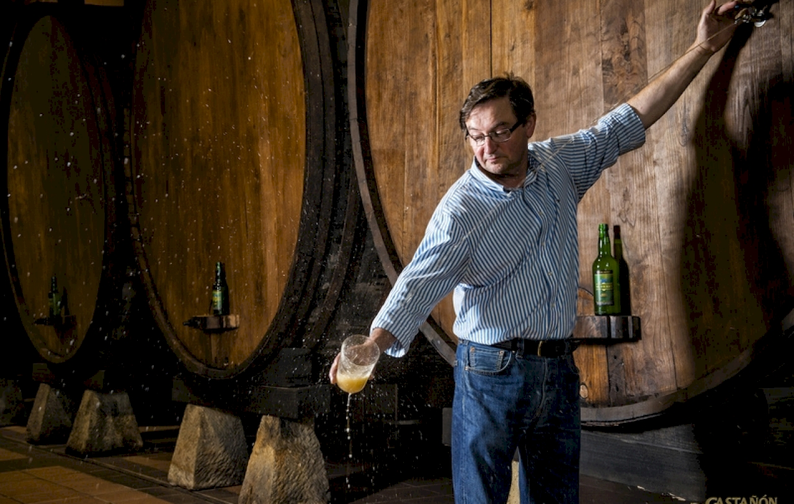

Visítanos y Descubre el Encanto de Nuestro Llagar
Bienvenido al llagar El Sidrero, donde la tradición y la modernidad se encuentran para ofrecerte una experiencia única en el mundo de la sidra asturiana. Te invitamos a sumergirte en nuestro llagar, donde cada rincón cuenta la historia de generaciones dedicadas a perfeccionar el arte de la sidra.
¿Qué Puedes Esperar?

- Recorridos Guiados: De la manzana a la botella, nuestro equipo te llevará a través de cada paso del proceso artesanal. Descubre los secretos detrás de nuestras recetas familiares y aprende cómo creamos cada botella con pasión y dedicación.
- Degustaciones Personalizadas: Sumérgete en una experiencia sensorial única probando nuestras diferentes variedades de sidra. Desde la clásica y refrescante hasta las innovadoras con sabores únicos, encontrarás algo que se adapte perfectamente a tu paladar.
- Ambiente Familiar: Nuestro llagar es más que un lugar de producción; es un hogar lleno de historias. Disfruta de un ambiente acogedor y familiar mientras exploras nuestro espacio y conoces a la familia detrás de cada botella.
¿Cómo Llegar?
Nos encontramos en Periurbano, en el corazón de Gijón. Si estás listo para vivir la auténtica experiencia asturiana de la sidra, solo tienes que seguir el aroma a manzanas frescas y la risa de aquellos que comparten momentos especiales en nuestro llagar.
Horarios de Visita:
- Lunes a Viernes: 12:00/14:00 - 16:00-20:00
- Sábados y Domingos: 12:00/14:00
¡Esperamos darte la bienvenida pronto en el llagar El Sidrero y compartir contigo la magia que reside en cada botella!